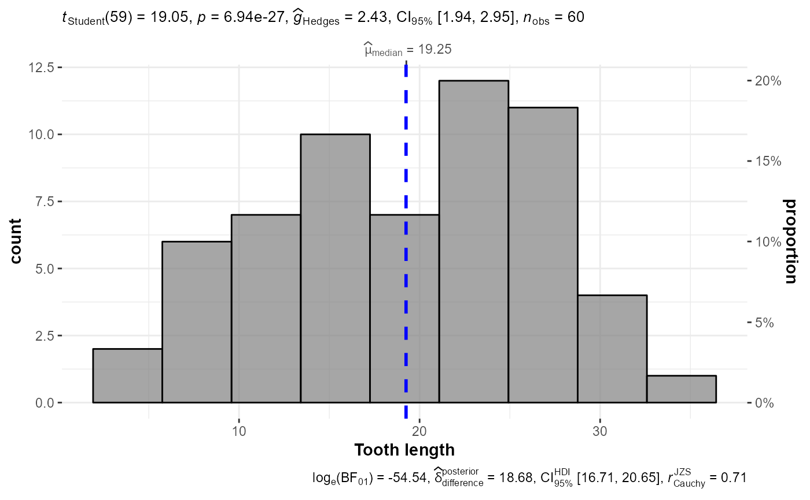
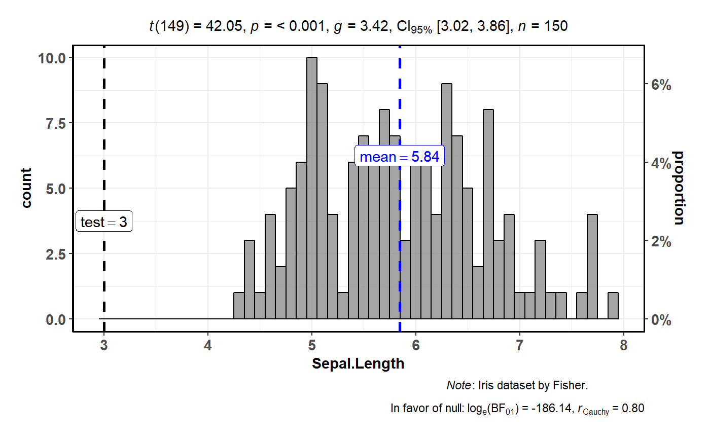

Histogram for distribution of a numeric variable
gghistostats.RdHistogram with statistical details from one-sample test included in the plot as a subtitle.
gghistostats(data = NULL, x, xlab = NULL, title = NULL, subtitle = NULL, caption = NULL, type = "parametric", test.value = 0, bf.prior = 0.707, bf.message = TRUE, k = 3, low.color = "#0072B2", high.color = "#D55E00", results.subtitle = TRUE, centrality.para = NULL, centrality.colour = "blue", test.value.line = FALSE, test.value.colour = "black", binwidth.adjust = FALSE, binwidth = NULL, messages = TRUE)
Arguments
| data | Dataframe from which variables specified are preferentially to be taken. |
|---|---|
| x | A numeric variable. |
| xlab | Label for |
| title | The text for the plot title. |
| subtitle | The text for the plot subtitle if you don't want results from one sample test to be displayed. |
| caption | The text for the plot caption. |
| type | Type of statistic expected ( |
| test.value | A number specifying the value of the null hypothesis. |
| bf.prior | A number between 0.5 and 2 (default 0.707), the prior width to use in calculating Bayes factors. |
| bf.message | Logical. Decides whether to display Bayes Factor in favor
of null hypothesis for parametric test if the null hypothesis can't be
rejected (Default: |
| k | Number of decimal places expected for results. |
| low.color, high.color | Colors for low and high ends of the gradient. Defaults are colorblind-friendly. |
| results.subtitle | Decides whether the results of statistical tests are
to be displayed as subtitle (Default: |
| centrality.para | Decides which measure of central tendency ( |
| centrality.colour | Decides colour for the vertical line for centrality
parameter (Default: |
| test.value.line | Decides whether test value is to be displayed as a
vertical line (Default: |
| test.value.colour | Decides colour for the vertical line denoting test
value (Default: |
| binwidth.adjust | If set to |
| binwidth | The width of the bins. Can be specified as a numeric value,
or a function that calculates width from |
| messages | Decides whether messages references, notes, and warnings are
to be displayed (Default: |
See also
Examples
# most basic function call with the defaults ggstatsplot::gghistostats( data = datasets::ToothGrowth, x = len, xlab = "Tooth length")#>#>#> Note: Anderson-Darling Normality Test for len : p-value = 0.087#># another example ggstatsplot::gghistostats( data = NULL, x = stats::rnorm(n = 1000, mean = 0, sd = 1), centrality.para = "mean", type = "np" )#># more detailed function call ggstatsplot::gghistostats( data = datasets::iris, x = Sepal.Length, type = "bf", bf.prior = 0.8, test.value = 3, centrality.para = "mean", test.value.line = TRUE, binwidth.adjust = TRUE, binwidth = 0.10 )#>#> Note: Prior width used to compute Bayes Factor: 0.8 #> Evidence in favor of the null hypothesis (H0): 1.43971963628525e-81#>#> Note: Anderson-Darling Normality Test for Sepal.Length : p-value = 0.023#>